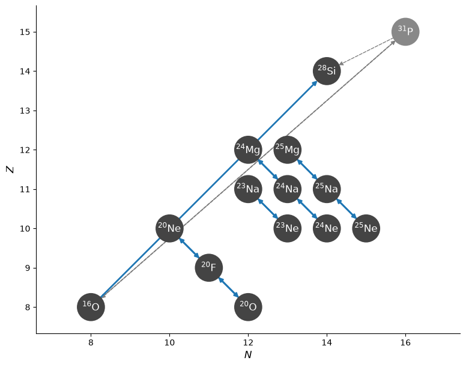
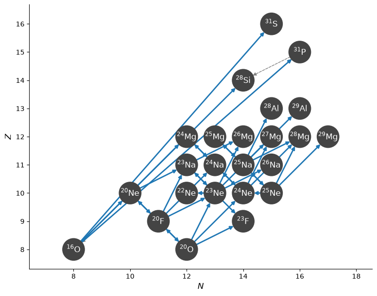
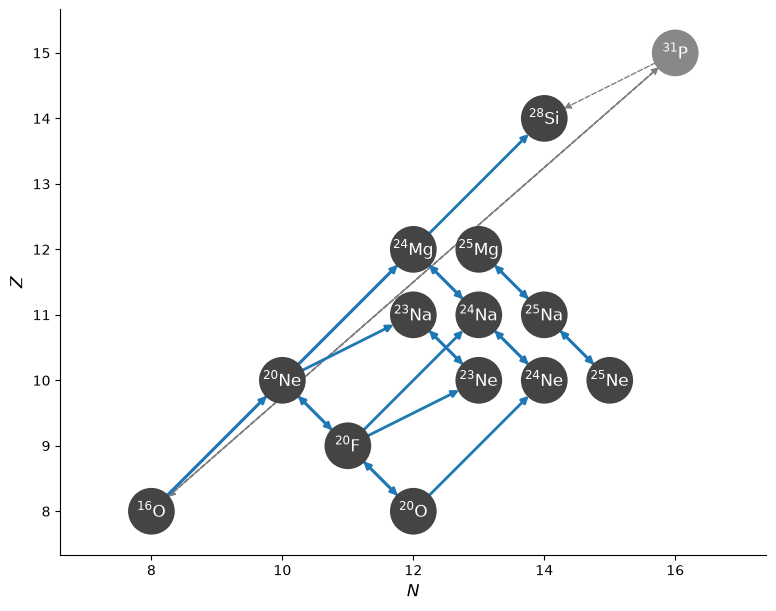

Finding other important rates#
import pynucastro as pyna
import mesa_reader as mr
from pynucastro import mesa_utils
from pynucastro.screening import chugunov_2007
Read in the MESA model#
model = mr.MesaData("lab3/profile2.data")
nuclei = mesa_utils.get_nuclei(model)
nuclei
[H1,
He4,
O16,
O20,
F20,
Ne20,
Ne23,
Ne24,
Ne25,
Na23,
Na24,
Na25,
Mg24,
Mg25,
Si28]
mesa_model = mesa_utils.MesaModel(model)
Create the network using the same species as the MESA model#
Full network#
By default, network_helper will find all the rates connecting the nuclei, some of which were likely not used in the MESA simulation.
net_full = pyna.network_helper(nuclei)
net_full.summary()
Network summary
---------------
explicitly carried nuclei: 15
approximated-out nuclei: 0
inert nuclei (included in carried): 0
NSE compatible? False
total number of rates: 38
rates explicitly connecting nuclei: 38
hidden rates: 0
reaclib rates: 12
starlib rates: 0
temperature tabular rates: 0
weak tabular rates: 14
approximate rates: 0
derived rates: 12
branched rates: 0
modified rates: 0
custom rates: 0
fig = net_full.plot()

reduced network#
separately create a network that has just the rates that we used in MESA.
rl = pyna.ReacLibLibrary()
tl = pyna.TabularLibrary()
all_lib = rl + tl
/tmp/ipykernel_2727/94239008.py:2: DeprecationWarning: TabularLibrary is deprecated; use TabularWeakLibrary instead.
tl = pyna.TabularLibrary()
The MESA run uses a rate that approximates the \({}^{16}\mathrm{O} + {}^{16}\mathrm{O}\) burning through \({}^{31}\mathrm{P}\). We’ll create that rate first.
from pynucastro.rates.aprox_family_rates import make_CO_approx_rates
o_rates = make_CO_approx_rates(rl.get_rates(), "O")
o_lib = pyna.Library(rates=o_rates)
r1616 = o_lib.get_rate_by_name("o16(o16,a)si28")
type(r1616)
pynucastro.rates.approximate_rates.ApproximateRate
We see that r1616 is an ApproximateRate that will carry multiple rates to do the approximation.
Now get all the weak rates we used in the MESA simulation
rate_names = ["ne20(,)f20", "f20(,)ne20",
"f20(,)o20", "o20(,)f20",
"mg24(,)na24", "na24(,)mg24",
"na24(,)ne24", "ne24(,)na24",
"na23(,)ne23", "ne23(,)na23",
"mg25(,)na25", "na25(,)mg25",
"na25(,)ne25", "ne25(,)na25"]
rates = all_lib.get_rate_by_name(rate_names)
and put it all together, eliminating any duplicates (e.g. ReacLib and Suzuki both provide the link—we prefer the Suzuki)
lib = pyna.Library(rates=[r1616] + rates)
lib.eliminate_duplicates()
net = pyna.PythonNetwork(libraries=lib)
net.summary()
Network summary
---------------
explicitly carried nuclei: 14
approximated-out nuclei: 1
inert nuclei (included in carried): 0
NSE compatible? False
total number of rates: 22
rates explicitly connecting nuclei: 15
hidden rates: 7
reaclib rates: 7
starlib rates: 0
temperature tabular rates: 0
weak tabular rates: 14
approximate rates: 1
derived rates: 0
branched rates: 0
modified rates: 0
custom rates: 0
fig = net.plot()

Check nuclei for other branches#
full_library = pyna.full_library()
_, missing_rates = net.validate(full_library, return_dict=True)
validation: Si28 produced in O16 + O16 ⟶ Si28 + He4 never consumed.
validation: He4 produced in O16 + O16 ⟶ Si28 + He4 never consumed.
len(missing_rates)
162
This finds 162 other potential rates. But this includes a lot of duplicates (like StarLib rates vs. ReacLib rates). Let’s eliminate the StarLib rates
trimmed_rates = [r for r in missing_rates.keys()
if not isinstance(r, pyna.rates.StarLibRate)]
len(trimmed_rates)
82
Determine if any missing rates are important#
We’ll pick some zones from the MESA model to consider
import numpy as np
zones = np.linspace(385, 785, 11, dtype=int)
zones
array([385, 425, 465, 505, 545, 585, 625, 665, 705, 745, 785])
We only consider a rate important if it is within this threshold for the fastest capture on the same nucleus. Since some existing rates may be very small, we also put a floor, ydot_cutoff on the # of reactions / sec we care about
thresh = 0.2
ydot_cutoff = 1.e-15
possibly_important = []
for izone in zones:
state = mesa_model.get_zone_data(izone)
for nuc in net.unique_nuclei:
thermo = pyna.ThermoState(rho=state.rho,
T=state.T,
comp=state.comp)
# evaluate all existing rates working with this nucleus
r_current = {r : r.eval_full_rate(thermo,
screen_func=chugunov_2007)
for r in net.get_rates() if nuc == max(r.reactants)}
# evaluate all missing rates working with this nucleus
r_missing = {r : r.eval_full_rate(thermo,
screen_func=chugunov_2007)
for r in trimmed_rates if nuc == max(r.reactants)}
# compute the fastest (abs value) current rate consuming this nucleus
if not (r_current and r_missing):
continue
r_fastest = max(r_current, key=r_current.get)
lambda_fastest = r_current[r_fastest]
# now check if any missing rate is within the threshold
possibly_important += [r for r, v in r_missing.items()
if v > max(ydot_cutoff, thresh * lambda_fastest)]
possibly_important = set(possibly_important)
possibly_important
{O16 + He4 ⟶ Ne20 + 𝛾,
O16 + O16 ⟶ p + P31,
O16 + O16 ⟶ n + S31,
O20 + He4 ⟶ p + F23,
O20 + He4 ⟶ n + Ne23,
O20 + He4 ⟶ Ne24 + 𝛾,
F20 + He4 ⟶ p + Ne23,
F20 + He4 ⟶ n + Na23,
F20 + He4 ⟶ Na24 + 𝛾,
Ne20 + He4 ⟶ p + Na23,
Ne20 + He4 ⟶ Mg24 + 𝛾,
Ne23 + e⁻ ⟶ F23 + 𝜈,
Ne23 + He4 ⟶ p + Na26,
Ne23 + He4 ⟶ n + Mg26,
Ne23 ⟶ n + Ne22,
Ne23 + He4 ⟶ Mg27 + 𝛾,
Ne24 + He4 ⟶ n + Mg27,
Ne24 + He4 ⟶ Mg28 + 𝛾,
Ne25 ⟶ n + Ne24,
Ne25 + He4 ⟶ n + Mg28,
Ne25 + He4 ⟶ Mg29 + 𝛾,
Na23 + He4 ⟶ p + Mg26,
Na25 + He4 ⟶ p + Mg28,
Na25 + He4 ⟶ n + Al28,
Na25 + He4 ⟶ Al29 + 𝛾}
which of these involve only the nuclei we are already carrying? (also allow protons)
okay_nuc = net.unique_nuclei + [pyna.Nucleus("p")]
filtered_rates = []
for r in possibly_important:
okay = True
for nuc in r.reactants + r.products:
if nuc not in okay_nuc:
okay = False
break
if okay:
filtered_rates.append(r)
for r in filtered_rates:
print(f"{r!s:25} {type(r).__name__}")
O16 + He4 ⟶ Ne20 + 𝛾 ReacLibRate
Ne20 + He4 ⟶ Mg24 + 𝛾 ReacLibRate
F20 + He4 ⟶ p + Ne23 ReacLibRate
F20 + He4 ⟶ Na24 + 𝛾 ReacLibRate
O20 + He4 ⟶ Ne24 + 𝛾 ReacLibRate
Ne20 + He4 ⟶ p + Na23 ReacLibRate
Network with all missing rates#
rates = net.get_rates() + list(possibly_important)
big_net = pyna.PythonNetwork(rates=rates)
big_net.summary()
Network summary
---------------
explicitly carried nuclei: 27
approximated-out nuclei: 0
inert nuclei (included in carried): 0
NSE compatible? False
total number of rates: 46
rates explicitly connecting nuclei: 40
hidden rates: 6
reaclib rates: 30
starlib rates: 0
temperature tabular rates: 0
weak tabular rates: 15
approximate rates: 1
derived rates: 0
branched rates: 0
modified rates: 0
custom rates: 0
fig = big_net.plot()

what if we restrict it to just the rates that use the same nuclei?
rates = net.get_rates() + list(filtered_rates)
new_net = pyna.PythonNetwork(rates=rates)
new_net.summary()
Network summary
---------------
explicitly carried nuclei: 15
approximated-out nuclei: 1
inert nuclei (included in carried): 0
NSE compatible? False
total number of rates: 28
rates explicitly connecting nuclei: 21
hidden rates: 7
reaclib rates: 13
starlib rates: 0
temperature tabular rates: 0
weak tabular rates: 14
approximate rates: 1
derived rates: 0
branched rates: 0
modified rates: 0
custom rates: 0
fig = new_net.plot()
